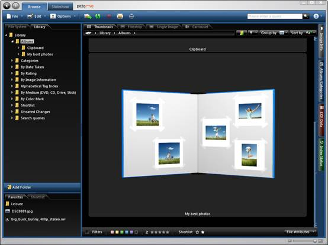
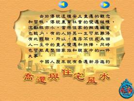

| 組別：G1 |
| 日期：2009/06/08~2009/06/14
|
| 組員：林煥鈞、楊孟宜、王逸賢、莊佳樺、王雅雯 |
| 主題：T島 |
本週老師給予建議 |
1.下週期末專題總彙編(index) 2.創新科技應用 3.專題自我進修 4.發表後，接下來就是[論文第三版]!! |
本週內容Part1-會議紀錄 |
INDEX 學習日誌(Daily)->專題每週進度、會議紀錄、老師建議(串燒)總彙編 創新運用科技(Technology)->彙整&錄製(MOMO) 選書閱讀(Reading)->更新進度&Doing(All) 論文(Paper)->合合合起來(KITTY) 文獻資料(Source)->網路資源&論文資料(雯雯) 製作團隊(Team)->已有現成品(雯雯) 總彙編(串燒)=>禮拜六中午12點deadline 日誌彙編-----------KITTY 創新運用科技-----MOMO&雯雯 |
創新應用科技 |
Pictomio 1.2.29(繁簡英語言)多功能3D立體看圖編輯軟件~功能超越ACDSee、PhotoShop  下載:http://www.pictomio.com/en-US/Download/Default.aspx
硬碟點滴概念產品，救救你中毒的電腦
幫你電腦打點滴？ 現在這個工具還只是一個由Hyuh Jin Lee開發的概念產品，但是個點子很有趣。當硬碟中毒時，只要把這個攜帶式硬碟點滴哪出來，用USB接上你臥病不起的筆電，防毒軟體會自動啟動然後開始掃描檔案，然後一個回應的燈就會在點滴彈中亮起，告訴你現在正在治療中。 創新科技風水大師 (風水教學程式)  |
本週分工 |
創新應用科技=>雅雯,孟宜 |